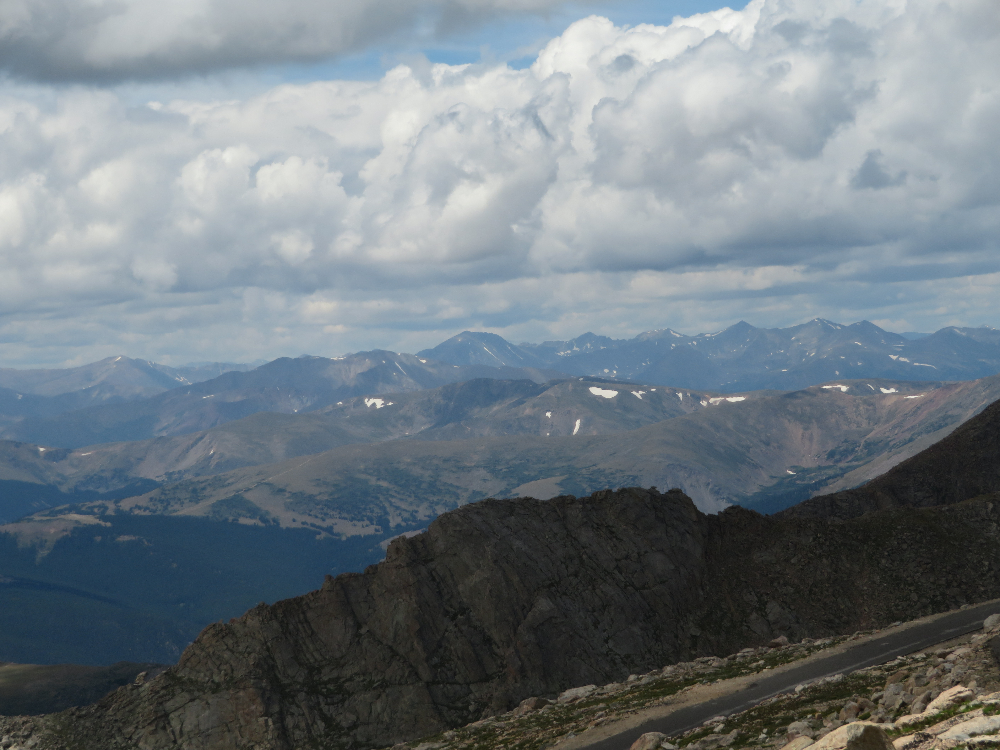

Reaching up to over 4300 meters above sea level, the Mt. Evans Scenic Byway in Colorado to its namesake mountain (or Mt. Blue Sky) is the highest paved road in the United States, and with fantastic scenery and wildlife opportunities, is totally worth the drive up.
The hiking at the top of the mountain is absolutely stunning, bringing great views of Summit Lake (Left, center) below as well as the other Front Range mountains (right) in the background. Even without hiking though, there is endless gorgeous scenery at every point on the byway.


While the mountain and alpine views are certainly spectacular, the wildlife along the byway is the highlight of the drive in my opinion. My favorite wildlife species has to be the Mountain Goats (entire top row), as I saw multiple herds of Mountain Goats and their adorable lambs in various points along the drive. Bighorn sheep (Bottom left images) are also abundant, especially around the Summit Lake area where they often roam on or near the road. Adorable Marmots (Bottom right images) and pikas are also extremely common, especially on the trail up to the summit. With so many high quality animal sightings I had here, the Mt. Evans Scenic Byway is a wildlife haven within the gorgeous mountains of the Colorado Front Range.